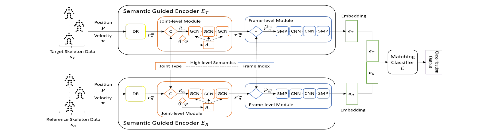
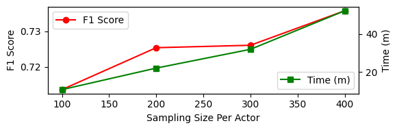

Linkage Attack on Skeleton Motion
Skeleton data captured in VR looks anonymous. A Siamese matching network shows it is not — and that motion retargeting is a general defense.
Overview
Anonymous skeletons still name you
Motion capture in VR strips away face, voice, and appearance, so the resulting skeleton sequence is often treated as anonymous. It still encodes body measurements, gait, and movement patterns — personally identifiable information an adversary can link back to a person using nothing but public video.
Linkage, not classification
Prior re-identification models predict an ID from a fixed roster. LAN instead answers a yes/no matching question, so it applies to individuals the model has never seen.
Semantic-guided encoding
Two weight-sharing encoders combine GCNs over joints with CNNs over frames, injecting joint-type and frame-index semantics to compress PII into a low-dimensional embedding.
Generalizes past training
Trained on NTU60 and evaluated on the 66 actors and 60 action classes of NTU120 that are held out entirely from training.
Retargeting as defense
Casting motion onto a dummy skeleton removes spatial PII without adversarial training against a specific attacker — but the utility cost is steep.
Threat model
Target
An anonymized skeleton sequence sT visualized in a shared VR space. No identity label is attached.
Reference
A skeleton sequence sR the adversary extracts from public video, where the identity is known.
Goal
Decide whether the two sequences come from the same individual. A single match deanonymizes the target.
Method
Two encoders, one matching classifier
LAN is built on the structure of a Siamese network. Semantic-Guided Encoders ET and ER extract PII embeddings from the target and reference sequences; the matching classifier compares them and emits a binary decision.
Classifier C1D conv → BN → FC × 3
The two Semantic-Guided Encoders share the joint-type and frame-index embeddings, so target and reference sequences are projected into the same PII space.
Encoder components
Dynamics Representation
Each joint is described by its 3D position p and velocity v = pn − pn−1. Both pass through two FC + ReLU layers and are fused by summation.
Joint-level Module
Joint-type semantics are concatenated onto the dynamics. An adjacency matrix is learned from embedded-space affinities, then three residual graph convolutions capture within-frame joint correlations.
Frame-level Module
Frame-index semantics are added, spatial max-pooling collapses joints, two CNN layers model temporal dependencies, and temporal max-pooling yields the sequence-level embedding.
Matching Classifier
A 1D convolution over the concatenated embeddings, two batch-norm layers, and three fully connected layers ending in a sigmoid that predicts same / different person.
Training
Pre-train the encoders for identity
Each SGE is trained alone with a fully connected softmax head that predicts personal ID. The learned embeddings already capture PII correlations within and across frames.
Train end-to-end for linkage
Both encoders and the classifier are optimized jointly under a binary cross-entropy loss CE(y, C(ET(sT), ER(sR))). Unfreezing the encoders adds an average of 2% F-1 over keeping them frozen.
Positive sampling
A target sequence is paired with another sequence from the same actor and labelled y = 1.
Negative sampling
A target sequence is paired with a sequence from any other actor and labelled y = 0. Sampling rates are balanced across both classes.

Results
A measurable privacy leak
All experiments use NTU RGB+D 60+120. LAN is trained on the 40 actors of NTU60 and tested on the 66 unseen actors of NTU120, giving 32,000 training and 52,800 testing samples at the default sampling size of 400 per target actor.
| Attack model | Precision | Recall | F-1 score |
|---|---|---|---|
| LAN (ours) | 0.6830 | 0.8138 | 0.7427 |
| MLP | 0.7059 | 0.6852 | 0.6954 |
| Random forest | 0.7346 | 0.7708 | 0.6576 |
Table 1. LAN beats the MLP baseline by 4.73 points of F-1 and the random forest by 8.51 points, showing that semantic-guided embeddings capture PII in joint correlations that flat frame-wise features miss.
Recall drives the gap
LAN reaches 0.8138 recall against 0.6852 for the MLP. It misses far fewer true matches, which is the operative risk for a person being deanonymized.
End-to-end training helps
Fine-tuning the pre-trained SGE layers during linkage training yields an average 2% higher F-1 than freezing them after identity pre-training.
| Data for visualization | Precision | Recall | F-1 score |
|---|---|---|---|
| Raw data | 0.6830 | 0.8138 | 0.7427 |
| UNet | 0.5000 | 1.0000 | 0.6667 |
| ResNet | 0.5000 | 1.0000 | 0.6667 |
| Classical MR | 0.5004 | 0.9963 | 0.6662 |
| Deep MR | 0.5057 | 0.8977 | 0.6469 |
Table 2. A perfect anonymizer drives the attack to predict that every pair matches — precision 0.5 with recall 1.0. All four anonymizers land at or near that point, so all four effectively hide PII from LAN.
Anonymizers do hide PII
UNet and ResNet reach exactly precision 0.5 / recall 1.0: LAN believes every actor is the same person. Classical and deep motion retargeting are within a fraction of a point.
LAN leans on spatial cues
Because retargeting alters spatial structure while preserving timing, the collapse in performance indicates LAN weights spatial information more heavily than temporal — matching how humans recognize others by appearance rather than movement.
| Data for visualization | Action recognition accuracy | Linkage F-1 | Note |
|---|---|---|---|
| Raw data | 94.25% | 0.7427 | Full utility, full leakage |
| Deep MR | 4.55% | 0.6469 | Best utility of the anonymizers |
| Classical MR | 3.20% | 0.6662 | No training required |
| UNet | 0.84% | 0.6667 | ≈ random guessing (1/120) |
| ResNet | 0.84% | 0.6667 | ≈ random guessing (1/120) |
Action recognition utility measured with SGN on NTU60+120. The high utility reported for adversarial anonymizers elsewhere only holds against the utility adversary they were trained with; on unseen actors and unseen action classes it disappears.
The trade-off is not solved
Deep MR retains the most action information yet leaks the least, and even it drops from 94.25% to 4.55%. Every anonymizer tested pays a large utility cost for its privacy gain.
Retargeting generalizes
Unlike adversarial training, motion retargeting is not tied to specific characters, actions, or attack models, which makes it a complementary and broadly applicable defense.

More data, higher F-1
F-1 rises monotonically with the number of positive and negative pairs sampled per actor, and runtime rises with it.
Cheap at a quarter of the data
At a sampling size of 100 — 25% of the default setting — LAN still reaches 0.7136 F-1 while taking only 20% of the default runtime.
Low barrier for an adversary
The attack does not require the adversary to accumulate a large corpus of skeleton data before it becomes effective.
Defense
Anonymization through motion retargeting
Hiding the identity label is not enough — the skeleton itself carries indirect PII. Instead of adversarially training against a known attacker, we cast the raw motion onto a dummy character, transforming the spatial structure while leaving the motion pattern largely intact.
Classical retargeting
Inverse and forward kinematics align the dummy skeleton's joints with the target's, then map the motion by casting joint rotations. No training and low evaluation cost.
Deep retargeting
A neural network decomposes the sequence into skeleton-agnostic dynamic motion and static skeleton, recombines with a new skeleton, and decodes the retargeted sequence.
Adversarial anonymizers
Baselines from prior work that perturb the skeleton to confuse ID and gender classifiers while preserving a chosen action recognizer's performance.
Why adversarial falls short
ID classification only covers identities seen during training, the defense is confined to seen actions and attackers, and only the included utility model is preserved.
Dummy skeleton construction
The classical approach retargets onto an average skeleton computed over all actors in NTU60+120 by averaging Euclidean distances along the joint paths. Deep MR uses a random actor as the dummy.
Open problem
Deep MR has the highest utility and the lowest privacy leakage of the anonymizers, but the absolute utility is still low. Improving anonymizer utility without conceding privacy remains future work.
Usage
Running the code
Everything was developed in Jupyter notebooks and exported to standalone Python files. Preprocessed pickles and trained checkpoints are linked from the README in each directory.
Repository layout
Evaluate the linkage attack
cd "Linkage Attack/SGN Based Linkage Attack"
# evaluate a trained LAN checkpoint over 5 runs
python linkage_attack_eval.py \
--model models/unfrozen_69.5acc.pt \
--data path/to/X.pkl \
--samples_same 200 --samples_diff 200 \
--segments 20 --max_frames 300 \
--runs 5 --compute_auc --device cuda
Run the re-identification attackers
# SGN attack model — raw data, with action classification utility cd "Attacking Models/SGN Attack Model" python sgn_attack.py --data data/test_X.pkl --action_data data/X_action.pkl # same model against UNet/ResNet anonymized data python sgn_attack.py --data X_unet.pkl --action_data X_unet_action.pkl --source skele_anon # random forest baseline cd "../RF Attack Model" python rf_attack.py --model clf.pkl --data X.pkl --labels Genders.csv
Data format
# X.pkl — dict keyed by actor identifier { 'P001': np.ndarray, # (videos, 300 frames, 150 = 75 joints x 2 actors) 'P002': np.ndarray, ... } # X_action.pkl — same layout, keyed by action class 'A001' ... 'A120'
Raw .skeleton files come from the NTU RGB+D dataset; parsing code lives in Skeleton Info/. Preprocessed pickles and checkpoints are on Google Drive.
Implementation details
Dataset
NTU RGB+D 60+120, captured with Kinect v2. 40 actors / 60 actions in NTU60, plus 66 new actors and 60 new actions in NTU120. 25 joints, position information only.
LAN training
Trained on the full NTU60 split. Default sampling of 400 per target actor for both positive and negative pairs → 32,000 training and 52,800 testing samples.
Random forest baseline
Frame-wise, trained on 1.2M samples and tested on 2.07M. Hyperparameter tuning selected n_estimators = 100 and max_depth = 10.
MLP baseline
Four layers of sizes [1000, 100, 100, 1] over a flattened 50-frame sequence. Trained on 400,000 samples, tested on 690,000.
Citation
Cite this work
If you use LAN or this codebase in your research, please cite our CIKM 2023 paper.
@inproceedings{carr2023linkage,
author = {Carr, Thomas and Lu, Aidong and Xu, Depeng},
title = {Linkage Attack on Skeleton-based Motion Visualization},
booktitle = {Proceedings of the 32nd ACM International Conference
on Information and Knowledge Management (CIKM '23)},
year = {2023},
pages = {3758--3762},
publisher = {Association for Computing Machinery},
address = {New York, NY, USA},
doi = {10.1145/3583780.3615263}
}
Conference: 32nd ACM International Conference on Information and Knowledge Management (CIKM '23), October 21–25, 2023, Birmingham, United Kingdom
DOI: 10.1145/3583780.3615263